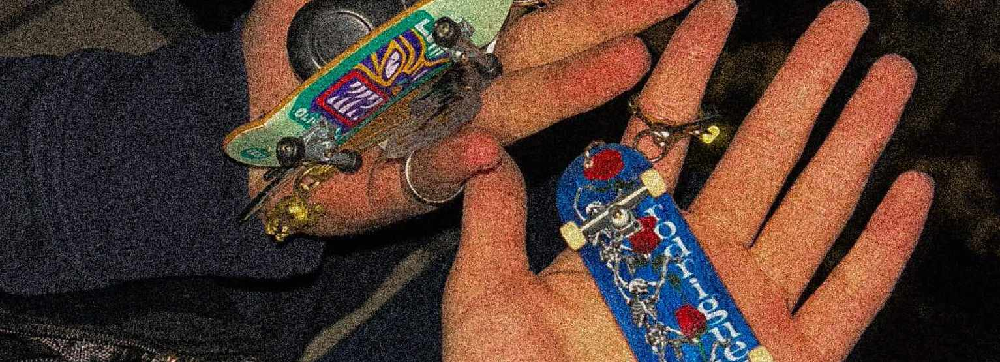
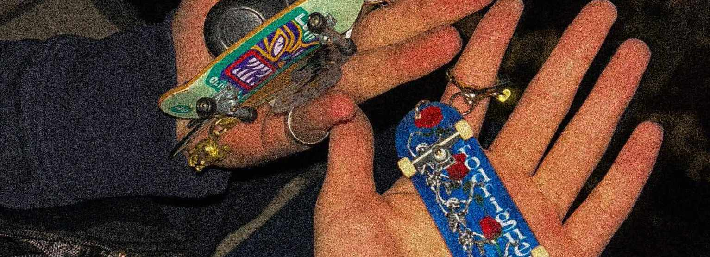
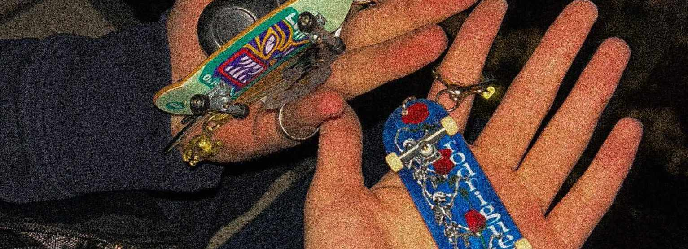
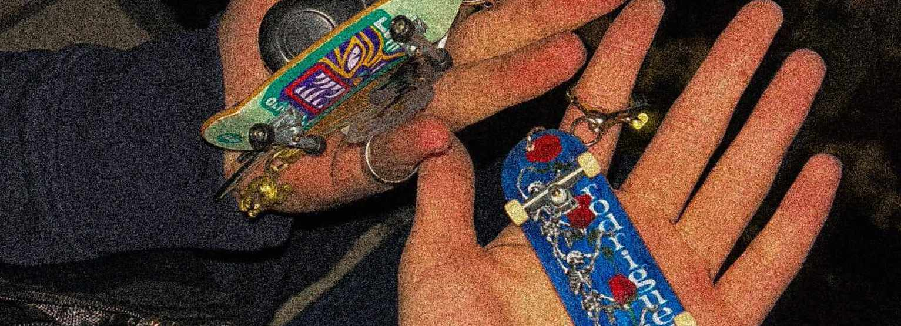

 

Энд бүр яаг жинхэнэ утгаараа "яаг үнэнийг хэлэхэд"- үүдээ бичсэн байгаа. (ง'̀-'́)ง
Чамдаа хийсэн бичлэг.Нэлээд хол зам туулжээ хоёулаа.
Яагаад ч юм, хэзээ ч зүгээр хуучирсан, Apparently "Haunted" байшин луу зүгээр л гаръя гээд гарчих хүн миний мэдэхийн чамаас өөр лавдаг мэдэхгүй шүү дээ. Үнэн өөр мэдрэмж байсан шүү Зулсаран гуай.
Энэ үе ч нэлээд эвгүй байсан л даа. Чи яаг яах гээд байгаа нь мэдэгдэхгүй нэлээд хэцүү байсан. Гэхдээ нэлээд гэнэн байжээ, тэвчээргүй ч гэхэн бас зохистой биз ээ, өөрөө гэнэт тэнэг хүн шиг бичсэн ээ хурдан хариу хүсэх бас арай л биш биз ээ.
Амьдралдаа анхны удаа ууж үзэж байгаа хүний царай наана чинь л байна даа (Би энэнээс өмнө нь ууж байсан гэж худ шаасан байгаа). Бас анх тэр муу 3 пиво авах гэж бүр Сараана-г дуудаж нтр. Тэгсэн бүр гэртээ орохоос айгаад алж өгсөөн Танайх луу жийж байхад ч гэсэн нэлээд сэтгэл зовинолотой хэцүү явдалтай байсандаа. Чи ч бас нэлээд хүн шок нд оруулсан л даа, зүгээр бараг мэдэхгүй нэг баачка г гэртээ авчирснаа ууж муугаад. Чи хүнд нэлээд их "trust" байсан бололтой чаавас, тэрэнд нь би бас баярласан л даа тэгээд орой гэртээ ирчээд нэлээд "overthink" хийж, нэлээд мөрөөдсөн ( ͡° ͜ʖ ͡° ) байдаг юм..
Гэхдээ яагаад ч юм, би зун бүр чамд нэлээд дургүй болчихсон байсан, хааяа чамаас болоод гармааргүй санагддаг байлаа. Гэхдээ жинхэнээсээ л "Its a me problem, not you problem" маягийн юм, зүгээр хүлээхээс л залхсан хүний уур биз. Гэхдээ эргэн бодохоор бүр жинхэнээсээ яаг гоё сэтгэлийн холбоос үүсгэсэн юм даа. ТТТ. Тэгээд тэрийгээ анзаарсны дараа бүр гэнэт санаж манаад алж өгсөөн. Тэгээд овоо нэг учраа олоод 9 сард уулзсандаа эргээд, нэлээд гоё байсан шүү. Яаг чиний хэлдгээр, юу ч болоогүй юм шиг буцаад уулзчих бас нэг төрлийн холбоос юм биз ээ хө. Anxiety-ч бас аймаар байсан л даа (NGL).
Чамд бэлэг өгнө гэхээр толгой бүр аймаар ажилдаг шүү, бараг тэр түлхүүрийн оосрыг бодож олж гэж бараг 20 минут шахуу бодсондоо, тэгээд бас цоолох гэж дахиад 30 минут. Энэ үед л өөрийгөө хүнд бэлэг өгөх их гоё юм байна гэдгээ анзаарсан, гэхдээ л бас өгөх тусам сэтгэл хааяа (дандаа) түгшүүртэй байдаг шүү. Хэтэрхий толгойндоо хэт их сонин2 юм ургуулж боддог. Би бас их сонин2, өөрөө бэлэг авахаараа нэлээд санаа зовдог, хүнд гай болж байгаа юм шиг санагдаж байгаа царай нь. Зза тэр ч яах вэ, бас л 26 давхрын үзүүрдээд ингэж цуг суух хүн ганц чи л юмаа, энэ үед чамайг нэлээд үнсмээр байв ч тэвчсэн2 (айсан2, унаад үхчихвэл яана гэж бодоод (Чи намайг алгадаад би унаад үхчихвэл яана гэж бодоод)). Бодоод байсан үхсэний нь үнсэх, бие ээ бариад чамтай ч ойртодгүй байлаа (ойртохоос айдаг)(✌ﾟ∀ﾟ)☞.
За энгэд Кэринж хийхдээ бэлдээрэй хө. Өдөржингөө муу өдцөн баачка нарыг харж байгаад чамайг харах хэр сайхан байсан гээч. Тэгээд чамайг тарахаас өмнө нь байлгамааргүй байсан гол шалтгаан нь энгэд эд нартай чамайг толгойндоо холбож хармааргүй байсан юм. Чи миний өдрийн амралт байсан нтр. ( ° ͜ʖ͡°)╭∩╮. (Уйллаа). Тэгээд гэнэт2 ирэхэд чинь бүр үнэндээ их сайхан байсан л даа, зүрхний шигдээс нтр гээд хуцаад байсан, үнэндээ их гоё санагдсан. Ирэхгүй өдрүүд бас жоохон гунигласан. (╭∩╮༼ ◕_◕༽╭∩╮)
Зүгээр нэг хундага хүрэх ч үгүй Жак-д улайчхаад тэнэгтэж өгсөөн, бас их л гоё байршилтай юм байна лээ. Яаг гэр лүүгээ харъя даа гэж бодоод явж байсан чи гэнэт залгахаар нь би утас аа авахаасаа өмнө баярлаад, Тэгээд нэлээд дотроо бахархалтайгаар танайд орсондоо. Энэ зургийг авж байхад бас л хөөрхий бие ээ барьчихсан чамд хүрэхээс айдаг байлаа. (Одоо ч бас айдаг л даа).╰(°ㅂ°)╯
Чи муу баачка, "Хүнийг гэнэт үнсвэл ална шүү" гээд байсан бүр аймар стресс тавьсан шүү. Тэр мөч яаг л гоё таарчихсан байхад яааядаа гэж бодоод нэл сэтгэлийн төвшүүртэй сууж байсан чинь бүр нэлээд гэнт татсан шүү. Хасаа хөөрхий цаана нь хэрэлдчих гээд сууж байхад хоёулаа бас нэлээд шир лээд байгаа нь энэ юм даа(кэкэк). Гэхдээ бас миний First Kiss гэхэд би үнэндээ гомдлохгүй байна, бүр яаг л өсвөр насны кино нь дээр гардаг шиг л. Яаг үнэнийг хэлэхэд би чамайг надаар яаг тоглоод байна даа гэж бодсон доо (өдөржингөө төсөөрөөд явчихаар бас тэгж бодох нь үндэслэлгүй бол биш биз ээ). Тэр өдөр ч зөндөө анхны юм болсон л доо, анхны удаа чамайг гартаа мэдрэв ((´ ͡༎ຶ ͜ʖ ͡༎ຶ `)︵‿︵). Бүтэн 7 сар хүлээсний эцэст чи намайг яаж дотроо ниссэн байгааг таах биз ээ. Үнэхээр л өөр мэдрэмж юм байна лээ. Бас тэр үед өөрийгөө нэлээд Physical touch-ийг гол Love language гэж бодсон нь буруу байсан юм байна лээ, 3 дахь нь л юм шиг байгаа.
За хоёулынхыг нь яаг жинхэнэ "Албан ёсны" болзоо хө. Энэ өдөр ч бас нэлээд их Anxiety-тай байсан шүү, гэхдээ анх уулзаж байгаагаас хамаагүй дээр учир нь би чамайг өөрийнхөө болгож авсан ( ° ͜ʖ ͡ – ✧). CAS-ийн Нар жагсалтыг нар жаргаж байхад сонсов. Нээрээ ч бас бодоод байхад чиний гарыг хөтлөхөд бүр хэтэрхий их dopamine өгсөн үе юм даа. Тийм болохоор энэ зураг хоёулынхыг нь авхуулсан миний хамгийн дуртай сэтгэлд дулаахан зураг юм байгаа.
Хөлдөж үхэнгээ алдсан ч гэсэн бүр жинхэнээсээ "Once in a lifetime experience" байсан. Чи ч бүхлээрээ тийм л тээ. Тэр тикток-ийг хийж байхад би бүр хэтэрхий бие барьсан байсан нь элт л дээ, бүр үнэндээ хиймээргүй байсан гэхдээ яах вэ дээ гэж бодоод л өөрийгөө хүчилсэн дээ. Энэ үед ч ёөрнө бас чамтай ойртохыг хүсдэг байсан ч айдаг байв даа. Орой нь яаг чиний төрсөн өдрийн бэлгийг бүр толгойгоо гашилтлаа бодсон шүү, тэгээд нэг юм эхэлсэн байдаг юм. Тэр орой л өөрийгөө яаг Хасаа тайп шит ээр дурлачихжээ гэж мэдсэн2.
Зүгээр авах өмнөх өдрөө сэтгэл нэлээд түгшүүртэй, байхгүй байх вий дээ гэж хэчнээн айсан гэж бодон. Тэгээд Саруултай очоод харсан чинь байхаар нь би бүр нэлээд их баярласан шүү. Тэгээд манай Агнууш эхч сайхан баглаж өгч байхад нэлээд яриа өрнөөд сайхан байсөөн. Хамгийн гол нь тэр үед би, Чиний ачаар юу2 ч үзчихээдээ гэж бүр нэлээд сонин бодол орж ирсэн. Thrift shop орж үзэх байтугай юу гэдгийн ч мэдэхгүй хүн бүр шинэ ертөнц д байгаа юм шиг, Саруул ч бас мэдэрсэн биз ээ. Тэр байтугай Улаанбаатар хотыг маань үнэхээр гоё өнгө оруулж өгсөн баачка нь чи л байсан юм даа. (∩ ͡ ° ʖ ͡ °) ⊃-(===>
Гай зүгээр анх, Костюм пиджак аа авчраарай гэхээр нь би бүр нэлээд их гайхсан шүү (Шок-нд орсон). Яаж ч бас тийм юм боддог юм бол гэж их л нухацтай бодсон л доо. Ааваасаа арай гэж нэг худал хэлж пиджакийн чирэн2 тэр муу таксинд суусандаа. Тэгээд л байдгаараа нөл Anxiety-тай Сансар луу явав. Тэгснээ чи зүгээр гэрээсээ хөөчихдөг биз дээ, гарж нэг тахиа ав гээд (гүйлдээ, би өөрөө л гарсан л даа). Тэгээд нүүрээ будан гэхээр чинь юу ч бодоогүй л дээ ("Хэр хөөрхөн болох бол" гэж дотроо бодож яаг хүүхэд шиг үсэрсэн). Хамгийн гунигтай хэсэг нь хөөрхий маргааш хичээлтэй болохоор буцаж явах болчхоод яаг л дотроо сайхан уйлсан байдаг юм. Ингэтлээ дурлачих гэж бас байдаг л юм байна лээ. ( ༎ຶ⌑༎ຶ )
Чи ч бас үнэн шир баачка гэдгээ нэлээд мэдрүүлсэндээ. Зүгээр ирэхгүй нтр гэснээ ирж хүнийг баярлуулдаг хөөрхөн л дөө. Энэ зураг ч бас "Sign of the times"-ийг бас нэлээд ухаж сонссон шүү. Бас ажлын сүүлийн өдөр гэж бодоод явах ойртож байна даа гэж нэлээд боддог л юм байна лээ хө, тэгээд яагаад ч юм, чамайг гар дулаацуулаад өг гэхэд үнэхээр их баярласан (Яагаад гэвэл одоо хүртэл чамайг надад дургүй гэсэн бодол байдаг л байлаа). Бодоод байсан ажил тарчхаад чамтай эзгүй дэлгүүрт бүр үнэндээ сайхан байжээ, тэр мөчүүд л бүр хамгаас их сэтгэлд хоногшсон бололтой. ( ͡°³ ͡°)
Би энэ өдрийг үнэндээ тэмдэглэмээргүй байсан. Өөртөө, та нарт бас эцэг эх дээ ч саад болж байгаа юм шиг санагдаад бас л нэлээд юм бодчихсон байсан л даа. Гэхдээ би тэмдэглэсэндээ үнэхээр харамсахгүй байна. Үнэхээр мартагдашгүй мөч байсан л даа, хүүхэд насны минь төгсгөл. Гай гэхдээ хамгийн гайхалтайн зүгээр хүний орон дээр хэвтэж байхдаа зүгээр уйлааш, хөөрхөн байсан нтр (ёөрнө чиний хийдэг бүх үйлдлийг хөөрхөн болгоод харчихдаг юм байна лээ). Зүгээр л сайхан өвөр дээр чинь хэвтэх байсан юм. (Зөндөө их харамсах зүйл ихтэй2). Чиний хэлдгээр би бас ёөрнө жоохон наалдах шинжтэй, бас жоохон нялуурах гээд байдаг сонин зуршилтай л даа. (Тэр хүнтэйгээ үнэхээр дотно бас итгэл найдвартай бол тэгдэг гэдэгтэй итгэлтэй шүү).
За энгэд сүүлийн уулзалт эхэлж байдаг юм даа хоёулынхыг нь, тэр үедээ ч сайн тунгааж бодоогүй байсан л даа гэхдээ одоо бодохоор яаг л гоё дуусгасан юм шиг (Ээж аав чинь чамайг чирээд явсныг эс тооцвол). Нээх хэлээд байх юм байхгүй өдөр дөө, анхны удаа яаг 100% Anxiety-гүй өнгөрөөсөн өдөр байсан гэхээс өөр. Бас нэлээд талархал л үлддэг юм даа. Баярлалаа.
Энэ үед юугаа ч бодож байсан юм сайн мэдэхгүй л байна шүү. Гэхдээ яаг тэр гарц нь дээрээ ирчхээд бүр нэлээд эвгүй болсноо сайн санаж байна. Одоо яаг үнэндээ юу хийхээ мэдэхгүй байсан хүний хариу үйлдэл биз. Ядаж байхад ээж хажууд байгаа болохоор хумсаа мэрээд ч болтугай суучихаж чадахгүй их хэцүү байлаа. (Бүр дахиж эргэн харахгүй/ярихгүй юм шиг л бодоод)..
1 Жил, 365 өдөр, 52 Долоо хоног, 8760 цаг, 525600 минут, 3153600 секунд. Надтай цуг байсан чамдаа баярлалаа.ᕙ(·ಥ╭͜ʖ╮ಥ·) ﾟ.*・｡ﾟ
\good night( ᵕᴗᵕ)*・☪︎·̩͙/